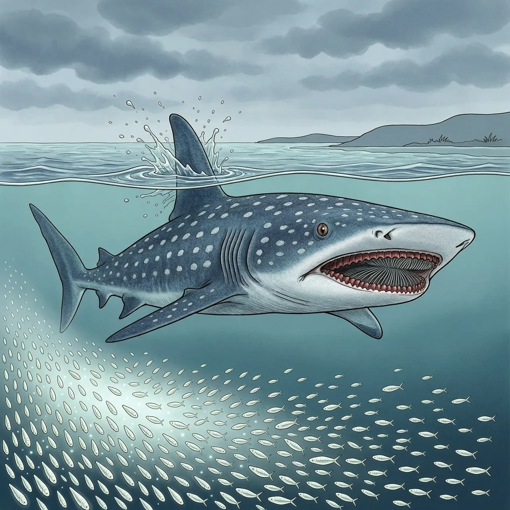
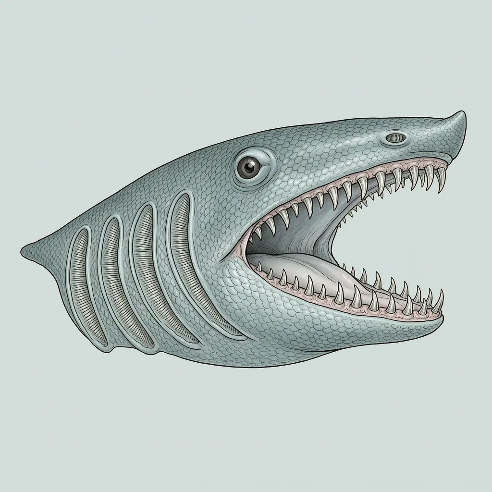

姥鲨是世界第二大鱼，仅次于鲸鲨，见于世界温带海域的近岸与大陆棚。它有一张可达 1 米宽的口，吃的却是浮游生物，靠不停游动把海水推进鳃里过滤。曾因冬季捕获到没有鳃耙的个体而被怀疑冬眠，如今确认全年活动，冬季下潜到约 900 米深处。现列濒危。
温带近岸的水温多在 8 至 14 摄氏度，姥鲨适应的正是这个区间。它的活动范围从海岸一直铺到大陆棚外的远洋，常游近岸边，也会钻进海湾，很多时候在水面上就能被看到。姥鲨走的路线跟着浮游生物的浓度变化，哪里浓就往哪里去，因此同一处海岸只在一年的特定季节碰得上它，其余时候海面上很少见。
姥鲨吃饭不追。它的口可达 1 米宽，摄食时一直张着，每小时约 2000 吨、约合 500 立方米的海水从嘴里过、从鳃裂排出，浮游生物、细小的鱼和无脊椎动物被鳃耙拦下。跟鲸鲨、巨口鲨不同，姥鲨不能主动把水吸进或泵进鳃里，只能靠一直往前游把海水推进去；它也不追着猎物跑，方向由发达的嗅球来定。那张大口里的牙是钩状的，只有 5 至 6 毫米，上颌仅前面 3 至 4 列、下颌 6 至 7 列还在用。
冬天浮游生物变少，又曾在冬季捕到几只没有鳃耙的姥鲨，人们一度以为姥鲨靠冬眠熬过食物稀薄的季节。后续研究把这个看法推翻了：姥鲨全年活动，只是冬天沉得更深，能到约 900 米的水层。撑过这段日子的靠的不是脂肪，而是一具占体重 25%、差不多与整个腹腔等长的肝脏，据信既管浮沉，也管长期存着能量。
